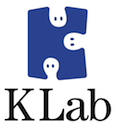

PyCon JP ジョブ・ボード¶
{kind=link}
PyCon JP ジョブ・ボードにはスポンサー企業の求人情報を掲載しています。 興味が有る方は各企業に連絡をとったり、PyCon JP 当日に企業担当者と話をしてみたり してください。
Gold Sponsor¶
 ¶
¶
- gumi
- http://gu3.co.jp/
gumiではソーシャルアプリ開発エンジニアを募集しています。 特に大量アクセス・高トラフィックを処理したい方、大歓迎です！
詳細は弊社求人情報をご参照ください。 http://gu3.co.jp/recruit/
¶
- エスキュービズム
- http://www.s-cubism.jp/
エスキュービズムではECシステムの受託案件の他に、先端的内容を扱いながら今までにないシステムを創り出す開発・研究も活発に行われています。単に作って公開するのではなく、実社会と関わり合い、ニーズを理解し、高い技術力をエンジンとして解決へと導くことを重視してきました。このエンジンとして積極的にPython言語を採用しており、優秀なPythonエンジニアも随時募集しています。
これまでも大規模トランザクションに耐えるテレビ放送局向けシステム、新しい体験を提供するCMS、学術色の強かった回帰学習型アシスタントシステムなど、多様な分野で知恵を絞ってアイディア満載のシステムをPythonを使って構築してきました。これからは現実世界とデータ、クラウドを結ぶセンサー分野、M2M分野での一歩を踏み出そうと準備を進めています。
経歴は問いません。もしあなたが腕一本で勝負してきたと自負するPythonistaなら、ぜひ一度連絡をお願いします。また、これまで他言語でバリバリやってきたがPythonは初めて！という方でも大丈夫です。さらに、物理・数学系を専攻する中で何かしらのプログラミングを経験した方も求めています。PyCon当日はセッションでも話すことになっていますので、会場で捕まえて頂ければその場でお話することも可能です。ぜひ、一緒に挑戦しましょう！
職種: エンジニア
- 勤務地: 港区芝公園（浜松町駅、大門駅、芝公園駅から徒歩数分）
詳細は弊社求人情報を御覧ください http://s-cubism.jp/careers/
¶
主に次のような分野でエンジニアを募集しています。 下記に当てはまる経験が御座いましたら望ましいですが、他分野からの転職も歓迎しています！ 採用基準は一緒に成長できる人かどうかです。
職種: インフラエンジニア
- 独自データセンターの構築・運用
- AWSなどの IaaS 上でのシステム構築・運用
職種: アプリケーションエンジニア
- 言語: JavaScript, Objective-C, Java, php, Python, Erlang など
- 環境: PC向けWeb, モバイルWeb, iOS, Android など
- 勤務地: 東京、大阪、福岡、仙台、フィリピン
Silver Sponsor¶
 ¶
¶
- ビープラウド
- http://www.beproud.jp/
ビープラウドは『プログラマ中心の集団』です。 プログラマとは、設計からコードにするまでを全て一人でできる人の事を指しています。 素晴らしいサービスやアプリケーションを造り出すには、 優秀なプログラマが必要です。
我々は会社のメインとなる言語の1つにPythonを採用しています。 Webアプリケーションや簡単なスクリプトのほとんどをPythonで実装しています。 もしあなたが、Pythonでコードを読み書きするのがとても気持ちよく感じるのであれば、きっと我々と相性はバッチリなはずです！
詳細は以下をご覧ください。
 ¶
¶
- SnapDish
- http://snapdi.sh/
料理や食べ物好きなエンジニア募集中。
- アプリプグラマ: Android / iPhone のどれかでの開発経験あり。
- WEBプログラマ: Python (Django, Flask, Tornado など）での開発経験あり。
- インフラ: AWSでの運用経験ありで、Apache, nginx, MySQL, MongoDB, Memcached, Redis のどどれかでの運用経験あり。
- 連絡先: SnapDish@vuzz.com
- 担当: 清田 (Twitter @kiyotaman)
- 場所: 吉祥寺 - http://4sq.com/xm1OmK
 ¶
¶
東京勤務の Google App Engine のサポートエンジニアを募集しています。 Job Description はこちらです: http://goo.gl/y6yzt
 ¶
¶
- キャッチボール・トゥエンティワン
- http://www.cb21.co.jp/
株式会社キャッチボール・トゥエンティワンは、自社開発で新規サービスを作っていくため、今年2月に開発グループを発足しました。 立ちあげて半年ですが、自社開発で新規サービスを作成中でございます。 新規サービス立ちあげに伴い、日々様々な技術的な課題に直面しています。
- Django で view とか model が増えてきた時の管理
- Supervisor で gunicorn プロセスの管理
- Python の CSV モジュールにおける unicode の扱い
これらの課題に一緒に取り組んでいただける Python プログラマを探しております。 もしご興味ございましたら、弊社社員が 4名 Pycon JP 2012に参加していますので、お気軽にお問い合わせください。
 ¶
¶
- TriAx
- http://triax.jp/
TriAx では「アカデミック×ビジネス」をキーワードに産学連携をビジョンとして掲げています。新しい技術を知り実世界に応用することに興味を持っている方は、是非我々と一緒に働いてみませんか？
詳細につきましてはこちらをご参照くださいhttp://triax.jp/about/recruit/
 ¶
¶
- ゼロスタート
- http://zero-start.jp/
ゼロスタートでは「Python で仕事をしたい」プログラマを募集しています。あなたの手で、弊社の「サイト内検索エンジン」や「レコメンドエンジン」、そしてクライアントサイトをより良くしてください！ 条件等は下記をご覧ください。
職種：Webプログラマ
- 仕事内容：自社製品のサイト内検索エンジン「ZERO-ZONE Search」などの開発
- 勤務地：東京都目黒区大橋（最寄駅：東急田園都市線 池尻大橋駅）
- 勤務時間：週休2日制、10：00〜19：00
- 給与：ご相談下さい
- 問合せ先： staff@zero-start.jp または コーポレートサイトの問合せページ
- 担当者：今津（メールや問合せが面倒な方は twitter @RicoImazu まで）
詳細が気になる・不明点があるという方は、お気軽にお問合わせ下さいませ。
 ¶
¶
- スポットライト
- http://www.smapo.jp/
職種: アプリケーションエンジニア
弊社提供サービス「スマポ」の根幹となるサーバーサイドアプリケーションの開発を行っていただきます サービス拡大に伴う機能拡張、API、社内外の管理画面、ログ解析など業務内容は多岐に渡ります。
- 環境など
- 言語: Python, Pyramid, SQLAlchemy
- DB: PostgreSQL, Postgis, MongoDB
- 条件: 500万円〜1,000万円（スキル・経験を考慮）
- 募集人員: 若干名
詳細は下記からご覧ください http://www.smapo.jp/engineer/
¶
- 日本仮想化技術
- http://virtualtech.jp/
職種: プログラマー
OpenStackのカスタマイズおよび新規機能開発。Pythonの他、C言語、Javaなどでも開発できる方歓迎。新オフィスは渋谷駅徒歩5分でゆったりしたデスクと全員アーロンチェアを使用。条件はフレキシブルに対応できます。